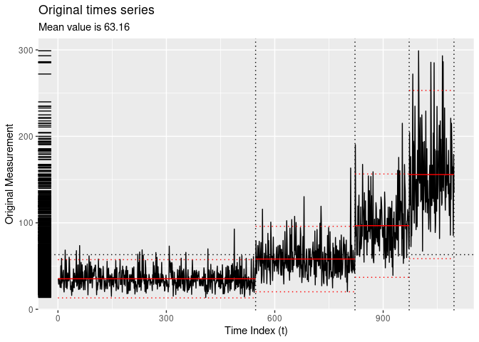
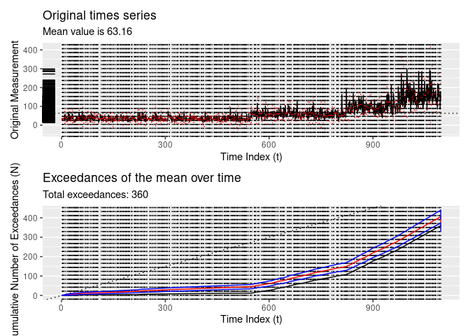
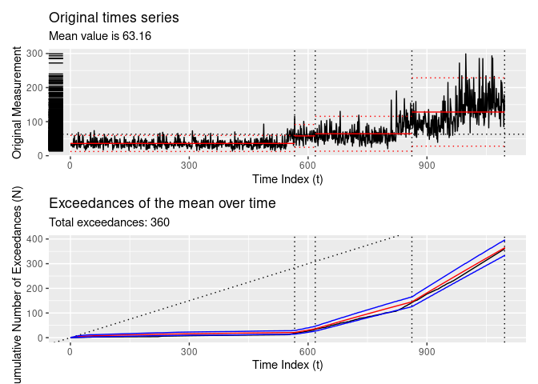
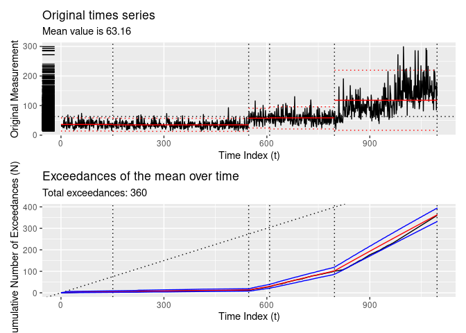

Tidy methods for changepoint analysis
Consider the following time series:

The tidychangepoint package allows you to use any number of algorithms for detecting changepoint sets in univariate time series with a common, tidyverse-compliant interface. It also provides model-fitting procedures for commonly-used parametric models, tools for computing various penalty functions, and graphical diagnostic displays.
Changepoint sets are computed using the segment() function, which takes a numeric vector that is coercible into a ts object, and a string indicating the algorithm you wish you use. segment() always returns a tidycpt object.
x <- segment(DataCPSim, method = "pelt")
class(x)Various methods are available for tidycpt objects. For example, as.ts() returns the original data as ts object, and changepoints() returns the set of changepoint indices.
changepoints(x)Retrieving information using the broom interface
tidychangepoint follows the design interface of the broom package. Therefore, augment(), tidy() and glance() methods exists for tidycpt objects.
-
augment()returns atsibblethat is grouped according to the regions defined by the changepoint set.
augment(x)## # A tsibble: 1,096 x 3 [1]
## # Groups: region [4]
## index y region
## <int> <dbl> <fct>
## 1 1 35.5 [0,547)
## 2 2 29.0 [0,547)
## 3 3 35.6 [0,547)
## 4 4 33.0 [0,547)
## 5 5 29.5 [0,547)
## 6 6 25.4 [0,547)
## 7 7 28.8 [0,547)
## 8 8 50.3 [0,547)
## 9 9 24.9 [0,547)
## 10 10 58.9 [0,547)
## # ℹ 1,086 more rows-
tidy()returns atblthat provides summary statistics for each region.
tidy(x)## # A tibble: 4 × 6
## region num_obs min max mean sd
## <fct> <int> <dbl> <dbl> <dbl> <dbl>
## 1 [0,547) 546 13.7 92.8 35.3 11.3
## 2 [547,822) 275 20.5 163. 58.1 19.3
## 3 [822,972) 150 39.2 215. 96.7 30.5
## 4 [972,1.1e+03] 125 67.2 299. 156. 49.6-
glance()returns atblthat provides summary statistics for the algorithm.
glance(x)Other methods
The plot() method leverages ggplot2 to provide an informative plot, with the regions defined by the changepoint set clearly demarcated, and the means within each region also indicated.
plot(x)
The diagnose() function shows the empirical cumulative distribution of the exceedances of the time series, as well as how that distribution is modeled as a non-homogeneous Poisson process.
diagnose(x)
Algorithms
Fast algorithms rom existing packages
- The
segment()function passes arguments to thecpt.meanvar()function from thechangepointpackage, and stores the resultingcptobject as itssegmenterobject.
y <- changepoint::cpt.meanvar(DataCPSim, method = "PELT")
identical(y, x$segmenter)The binary segmentation (method = "binseg") and segmented neighborhood (method = "binseg") algorithms, as implemented by the changepoint package, are also available.
- Wild binary segmentation via the
wbspackage is available viamethod = "wbs".
Genetic algorithms
-
method = "ga-shi": implements a genetic algorithm as specified by Shi and Lund, using theGApackage. [Note that this algorithm performs very poorly unlessmaxiteris set much, much higher.]
x <- DataCPSim |>
segment(method = "ga-shi", maxiter = 5)
length(changepoints(x))
diagnose(x)## Warning: Removed 247 rows containing missing values or values outside the scale range
## (`geom_segment()`).
## Removed 247 rows containing missing values or values outside the scale range
## (`geom_segment()`).
-
method = "taimal": implements the Genetic BMDL heuristic as per Taimal and Sierra-Suarez.
x <- DataCPSim |>
segment(method = "taimal", num_generations = 5)## method: taimal
## | | | 0% | |=============== | 25% | |============================== | 50% | |============================================= | 75% | |============================================================| 100%
changepoints(x)
diagnose(x)
Näive methods
segment() includes three options for computing changepoint sets using näive methods.
-
method = "null": returns null model with no changepoints

-
method = "manual": returns a model with changepoints specified manually using thecptsargument

-
method = "random": returns the best model from a random collection of changepoint sets.

Citation
citation("tidychangepoint")## To cite package 'tidychangepoint' in publications use:
##
## Taimal CA, Suárez-Sierra BM, Rivera JC (2023). "An Exploration of
## Genetic Algorithms Operators for the Detection of Multiple
## Change-Points of Exceedances Using Non-homogeneous Poisson Processes
## and Bayesian Methods." In _Colombian Conference on Computing_,
## 230-258. Springer. doi:10.1007/978-3-031-47372-2_20
## <https://doi.org/10.1007/978-3-031-47372-2_20>.
##
## A BibTeX entry for LaTeX users is
##
## @InProceedings{,
## title = {An Exploration of Genetic Algorithms Operators for the Detection of Multiple Change-Points of Exceedances Using Non-homogeneous Poisson Processes and Bayesian Methods},
## author = {Carlos A Taimal and Biviana Marcela Suárez-Sierra and Juan Carlos Rivera},
## booktitle = {Colombian Conference on Computing},
## year = {2023},
## pages = {230--258},
## organization = {Springer},
## doi = {10.1007/978-3-031-47372-2_20},
## }